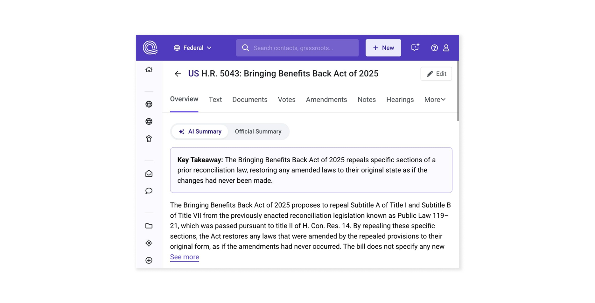
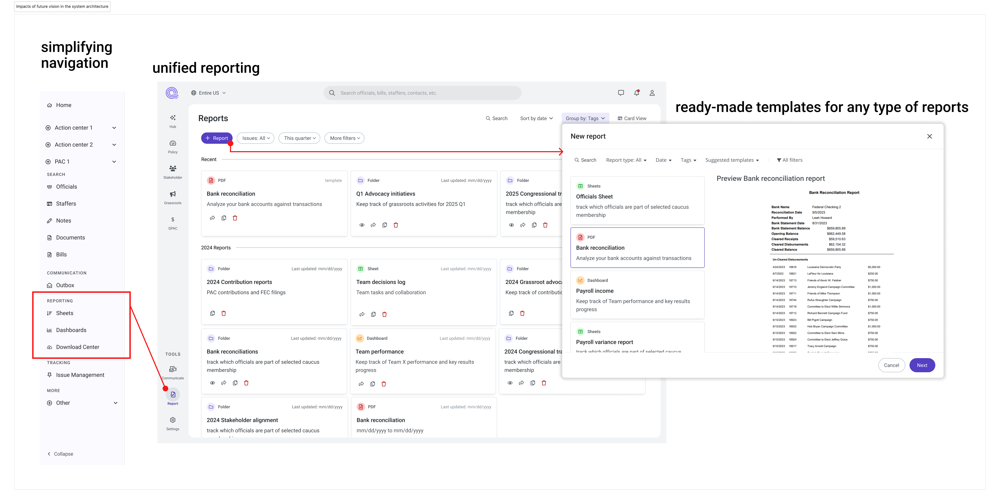

Overview
This case is part of a broader effort to help Quorum navigate a period of change driven by the introduction of AI.
At the time, the product had grown through rapid feature accumulation across policy tracking, lobbying, advocacy, PAC, and compliance, resulting in increasing complexity. AI intensified this challenge by introducing new interaction patterns, uncertainty, and adoption risks.
As AI became a strategic focus, the key question shifted from adding intelligent features to defining how AI could genuinely support users. In response, product and design partnered to create a forward-looking “AIfied” vision, rethinking UX patterns for an AI-augmented product.
My Role
I worked closely with the Director and VP of Product to shape an AI strategy, aligning product and engineering teams around a shared vision that informed the roadmap.
My approach was diagnostic, pairing insights from the latest usability survey—which exposed long-standing UX issues—with early signals from the AI beta, and translating those findings into proposed solutions for how AI could better support users' daily workflows.
Annual usability survey: the big picture
I led the end-to-end survey, coordinating planning, execution, and analysis across design, product, and marketing. The survey had two components:
- System Usability Scale (SUS): a 10-question industry-standard measure of perceived usability.
- Qualitative & rating questions: capturing overall impressions and feature-level preferences.

Looking across multiple years of data revealed a clear pattern: rapid, feature-driven growth led to new functionality being layered onto existing flows without revisiting them.
The same issues kept resurfacing, reflected in consistent usability scores. A closer look at the SUS statements pointed to the core problems: unnecessary complexity and steep learning curves.
Unnecessary Complexity: Overly difficult workflows created hidden friction.
Learnability Gap:Conceptual complexity raised barriers for new users and hurt long-term engagement.

AI beta: opportunities for this new technology
As Quorum rolled out AI features, I analyzed prompts and adoption patterns to find where AI could truly ease workflows, not just add "intelligence." Combining survey insights with usage data, I turned early user signals into clear opportunities for improvement.

General paradigms to consider for AI design
- Redesigning features with AI raised critical questions about the paradigm shift and its impact on our solutions.
- Every new technology faces barriers to adoption, from personal preferences to broader issues of trust.
- Embedding small, contextual AI "pills" in the interface proved more valuable, and drove seamless adoption than forcing users into a chat experience.

User quote: "The AI review right at the top of the page is the most useful to me. I can get right to it and decide if I care or not"
The Product + UX strategy
I led early research on prompts and UX. As scope expanded, I facilitated design discussions with the Product Director to reimagine interactions and define a long-term cross-product AI strategy.
I gradually involved my team, turning it into a collective effort. The final prototype became a complete product overhaul, enriched by diverse perspectives and serving as a shared reference across product, engineering, and leadership.
This work was further broken down in parts to be properly evolved by product teams and being mindful about the interface transition.
Documentation deliverables
- Vision prototype: Interactive mockup showing AI-augmented workflows showing how AI could transform the Quorum interface and user experience
- Design patterns: Documented common AI interaction patterns and best practices
- User journey maps: Visualized how AI could enhance specific user workflows
Collaboration at play
As Product Design Manager, it became clear that shifting the company mindset toward being AI-driven required me to keep our team in sync with fast-moving technology. Therefore, I engaged my team on the initiative, turning AI capabilities into tangible value across the organization. My tactic was, as I evolved the conversations with the Product and VP director, I gradually involved designers related to the parts of the interface we were working on.
Core concepts
AI that fits naturally into workflows
AI should fit naturally into existing workflows, enhancing familiar processes without forcing users to change how they work.
New navigation based in Hubs
We reframed features as part of a continuous system, reorganizing navigation around four core workflows aligned with users' jobs to be done.
This structure allowed AI to provide contextual suggestions without overwhelming users. For example, recommendations surfaced within a workflow hub are directly relevant to the task at hand, unlike feature-based pages that often trigger suggestions disconnected from user intent.
A company strategy workplace
The hardest part of defining a system-wide view was that collaborators were working on very different problems. At any given moment, one user might be running public advocacy campaigns while another analyzed the legal implications of a new regulation.
The strategy hub became the connective tissue across these efforts, showing how disparate government affairs activities come together to create organizational impact. By centralizing this view, we provided the missing link: clarity on why the work matters and how each action contributes to broader goals.

Reporting unified
Another major challenge to system visibility stemmed from Quorum's growth strategy: acquiring adjacent products and integrating them into a single platform. This led to a fragmented domain view, obscuring a core workflow centered on system-wide visibility.
Because the product relies on combining public and organizational data, meaningful understanding depends on contextual reporting that captures long-running or ongoing efforts. Reporting existed across multiple, disconnected features.
By unifying reporting under a single file-based system, we enabled teams to combine templates, tailor narratives, and curate outputs—resulting in clearer, more effective communication across the organization.

Reflection & learnings
Skills learned
Some important learning I got across the years, many times people ask a design vision, of what could be a beautiful experience, but this is esvaziado de significado when you don't think of a transition. Users don-'t want to relearn wverything again, therefore, the interface itself should scaffold change.
Involving the whole tem and guiding them through the process was a new challenge, but at the same time, was very fulfilling to see all th effoiks thaking ownership from the domain of the product they knew about and explore possibilities by themselves